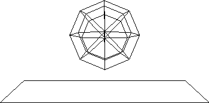
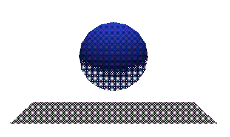
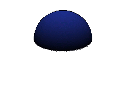
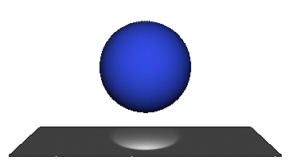

More...

More...
|
BMRT |
|
| © 1996 Michael J. Hammel |
 |

| RenderMan required shaders | Extra shaders provided for use with example scenes |
|---|---|
| constant, matte metal, shinymetal plastic, paintedplastic ambientlight, distantlight pointlight, spotlight depthcue, fog bumpy, null |
background, clamptoalpha,
dented, funkyglass,
glass, gmarbltile_polish,
noisysmoke, parquet_plank,
plank, screen,
screen_aa, shiny, stucco,
wallpaper_2stripe, wood2,
arealight - shader for area light sources |
| Both compiled versions and source code are provided for all of these shaders. | |
Note that the .so files provided are the precompiled versions of the .sl files and that the .so files are not compatible with PRMan, Pixar's RenderMan program. The .sl source files are compatible, however. The reason for this comes from the methods used internally to rendrib and PRMan to produce the 3D images. For more information see the section on Incompatibilities with PRMan in the bmrt.html document in the doc directory of the distribution.
##RenderMan RIB-Structure 1.0 version 3.03 Display "balls1.tif" "file" "rgba" Format 480 360 -1 PixelSamples 1 1 Projection "perspective" "fov" 45 Translate 0 -2 8 Rotate -110 1 0 0 WorldBegin LightSource "ambientlight" 1 "intensity" 0.08 Declare "shadows" "string" Attribute "light" "shadows" "on" LightSource "distantlight" 1 "from" [0 1 4] "to" [0 0 0] "intensity" 0.8 AttributeBegin # Attribute "render" "casts_shadows" "none" Color [ 0.7 0.7 0.7 ] Surface "matte" Polygon "P" [ -5 -5 0 5 -5 0 5 5 0 -5 5 0 ] AttributeEnd AttributeBegin Translate -2.25 0 2 Color [1 .45 .06] Surface "screen" "Kd" 0.2 "Ks" 0.8 "roughness" 0.15 "specularcolor" [1 .5 .1] Sphere 1 -1 1 360 AttributeEnd AttributeBegin Translate 0 0 2 Declare "casts_shadows" "string" Attribute "render" "casts_shadows" "shade" Color [1 .45 .06] Surface "screen_aa" "Kd" 0.2 "Ks" 0.8 "roughness" 0.15 "specularcolor" [1 .5 .1] Sphere 1 -1 1 360 AttributeEnd AttributeBegin Translate 2.25 0 2 Declare "casts_shadows" "string" Attribute "render" "casts_shadows" "shade" Surface "funkyglass" "roughness" 0.06 Sphere 1 -1 1 360 AttributeEnd WorldEnd
#include" #define NFRAMES 10 /* number of frames in the animation */ #define NCUBES 5 /* # of minicubes on a side of the color cube */ #define FRAMEROT 5.0 /* # of degress to rotate cube between frames */ main() { int frame; float scale; char filename[20]; RiBegin(RI_NULL); /* Start the renderer */ RiLightSource("distantlight", RI_NULL); /* Viewing transformation */ RiProjection("perspective", RI_NULL); RiTranslate(0.0, 0.0, 1.5); RiRotate(40.0, -1.0, 1.0, 0.0); for (frame = 1; frame <= NFRAMES; frame++) { sprintf(filename, "anim%d.pic", frame); RiFrameBegin(frame); RiDisplay(filename, RI_FILE, RI_RGBA, RI_NULL); RiWorldBegin(); scale=(float)(NFRAMES-(frame-1))/(float)NFRAMES; RiRotate(FRAMEROT * frame, 0.0, 0.0, 1.0); RiSurface("matte", RI_NULL); /* Define the cube */ ColorCube(NCUBES,scale); RiWorldEnd(); RiFrameEnd(); } RiEnd(); }
| gcc -o example-2a -O example-2a.c -I../include ../lib/libribout.a |
| example-2a > example-2a.rib |
|
OK, everything looks as it should. We've got a sphere and a plane.
Lets add some surfaces to the objects using rgl. The sphere
should be a solid blue and the plane should be grayish.
To preview the scene with rgl use the following command: rgl example-2a.rib |  |
| Figure 2: wireframe output from rendribv |
|
Again, this is about right. The image you're looking at isn't great
due to the way I captured the image and converted it to a GIF file.
But the image is about what I was expecting. The plane is a bit
dark. But lets see what we get from the high quality renderer.
To preview the scene with rendrib use the following command: rendrib example-2a.rib |  |
| Figure 3: output from rgl |
Oh oh. The ball is well lit on top, but the plane is
gone. Maybe it has someting to do with lighting.
Adjusting the lightingIn the sample source I set a distant light that sat on a line that stretches from <0.0, 10.5, -6.0> to <0.0, 0.0, 0.0>. This is allowing light to fall on only the top half of the ball, but doesn't explain why the plane isn't visible. Thats a different problem. The sample scene C source contains the following lines:RiLightSource(RI_DISTANTLIGHT, RI_INTENSITY, &intensity, RI_FROM, (RtPointer)from, RI_TO, (RtPointer)to, RI_NULL); |  |
| Figure 4: output from rendrib |
| A first guess was to try adding a spotlight above the surface, which can be seen in the updated version of the sample source. This had no effect, so I tried another shader - the same matte shader used on the sphere. Viola! The surface shows up, including the newly added spotlight. Way cool. |  |
| Figure 5: look boss - da plane! da plane! |
Lets look at two more examples:
LightSource "spotlight" 1 "from" [1 3 -4] "to" [0 0 0] "intensity" 15 This is just like the distant light used in example-2a. This time two lights are used, and they are spotlights instead of a distant light. The effect of well placed spotlight shows in the realism of this image. |
Figure 6: example 4a.jpg
|
| The next image is a little hard to see. I didn't have time to adjust the brightness (well I tried using xv but it kinda mucked up the image and I didn't have time to rerender Paul's RIB file). What it shows is the same scene as Figure 6 except this time textures have been applied to the sphere, the wall and the floor. The texture on the sphere is a glass stucco. The floor has a wood texture and the wall has a wallpaper effect. The sphere is interesting in that it uses a glass surface shader with a stucco displacement map. The displacement map alters the actual shape of the sphere causing the slightly bumpy effect that is (somewhat) visible in Figure 7. All of the textures are apparent from examination of the RIB file. All of the shaders used in this example are available in the 2.3.5 release of BMRT. It is left as an exercise for the reader to rerender and adjust for the darkness of the image. (Thats also something I always wanted to say.) |
Figure 7: example 4b.jpg
|
A shader is the part of the rendering program that calculates the appearance of visible surfaces in the scene. In RenderMan, a shader is a procedure written in the RenderMan Shading Language used to compute a value or set of values (e.g., the color of the surface) needed during rendering.In my language: a shader puts the surface on an object.
| © 1996 by Michael J. Hammel |